PiKVM v3 HAT¶
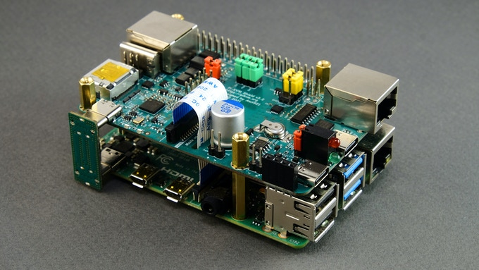
Installation requirements¶
If you have an assembly kit, you will need the following things
- Raspberry Pi 4 with 1Gb RAM or more.
- Heat sinks (Optional)
- MicroSD card (at least 16Gb, class 10 recommended).
- USB-C to USB-A cable.
- HDMI cable.
- Straight Ethernet cable (for the ATX board connection).
- Power supply unit (5.1V 3A USB-C, recommended by the Raspberry Pi).
Before assembling
- Please review the back of the box. All parts are required before hat is fully functional.
- The USB-C Bridge is located in with the ATX end which includes a pink foam spacer.
- Please assemble hat onto the rpi and test all of the parts before installing in the case, it's easier to install in the case than to dissasemble it.
- If going from a v2 to a v3, the splitter is no longer needed.
Basic setup¶
If you have a kit without a metal case, you can use our free 3D printing case drawing: v3.3 for the Kickstarter/Store model, v3.2 for the pre-release.
Please use the v3 image, V2 image is not compatible
-
Build PiKVM according to the video instruction or review the illustrated instructions:
Video Guide: Metal case step by step
NOTE: OLED will not light up till step 5 is performed, video was performed after it was already configured, heat sinks NOT included.
Video Guide: Step by step with HAT Device with or without the 3D-printed case
OLED glass can crack if force is used to install it, please handle with care and rock back and forth on the pins side to install.
-
Connect PiKVM to the computer according to the diagram below:
Back side Front side 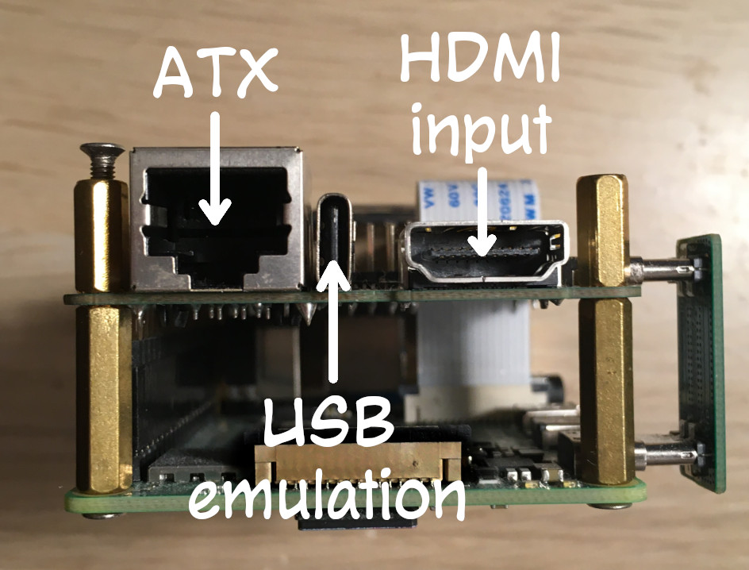 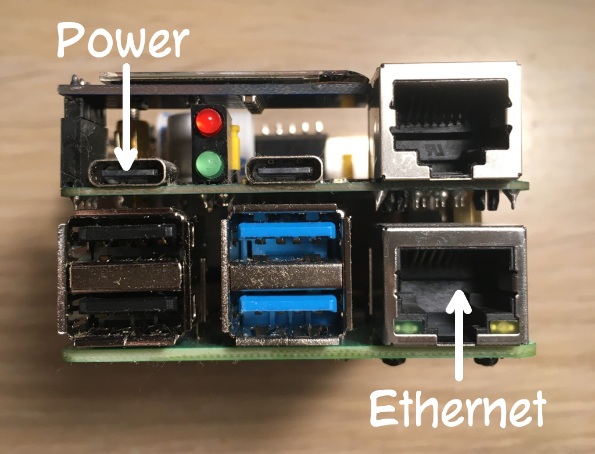 -
HDMI input and USB emulation port must be connected to the computer. ATX too, but it's optional, read below. There should be no USB hub between PiKVM and the computer, as some UEFI/BIOS cannot detect them at the boot stage. On the HDMI the HAT, like the CSI bridge, supports 1080p50Hz or 720p60Hz or lower.
-
Connect Ethernet to the network and USB Power to the Raspberry Pi power supply.
-
-
Carefully read the "First steps" guide - how to find a device on the network, how to log in there, change passwords, and so on. Follow the steps described there and come back here.
-
If your kit includes the OLED display and/or the fan, you'll need to turn them on (This is only needed for the v3 image)
Log in to PiKVM and run these commands:
If you want the temperature to be displayed in Fahreneit on the OLED and you do not want to update the whole system, then you will need to do this first after going to root:# rw # systemctl enable --now kvmd-oled kvmd-oled-reboot kvmd-oled-shutdown # systemctl enable --now kvmd-fan # ro# rw # pacman -Syy # pacman -S kvmd-oled # systemctl enable --now kvmd-oled kvmd-oled-reboot kvmd-oled-shutdownCreate file# mkdir -p /etc/systemd/system/kvmd-oled.service.dtouch or nano /etc/systemd/system/kvmd-oled.service.d/override.conf:And run[Service] ExecStart= ExecStart=/usr/bin/kvmd-oled --height=32 --clear-on-exit --fahrenheitsystemctl restart kvmd-oled. In some cases, if you still do not see Fahrenheit being displayed, reboot the pikvm. -
Just reminding again: CHANGE THE PASSWORDS! :)
How to do this was written in the "First steps" guide
-
Try to manage the computer using PiKVM with the Web Interface. Make sure that you see the image, and the keyboard and mouse are working. If something doesn't work, check out our FAQ (it's really useful). If nothing helped, you can get support in our Discord chat.
-
Check the HDMI backpowering problem. ONLY applicable under specific circumstances. NOT Getting NO SIGNAL.
Try restarting PiKVM using the
rebootcommand executed in the terminal. If PiKVM hangs during boot (you can't get the Web Interface for a long time), then you are faced with this rare problem. Don't worry, it's easy to fix. Turn off the PiKVM, disconnect all cables from it, take a close look at the diagram of its ports and jumpers, and remove jumper #14 (it is to the right of the CSI connector). Then you can connect and power up PiKVM again. Now everything will be fine. -
IO ports and other things
Before using GPIO pins to control a relay, KVM switch, or anything else, be sure to check the HAT pinout. Many ports are busy with internal functions. Before using them for your own use, you must disable them, otherwise you may damage the device.
-
You can also try the experimental audio forwarding.
ATX connection¶
To manage the power of your computer, you will need to install an ATX adapter board inside the case and connect it to the motherboard.
-
Connect the rainbow wires as follows to the board. Optionally print the mounting plate for the PCI slot on a 3D-printer. Assemble everything like on pictures below. Secure wires in any convenient way (we used soft ties).
Example
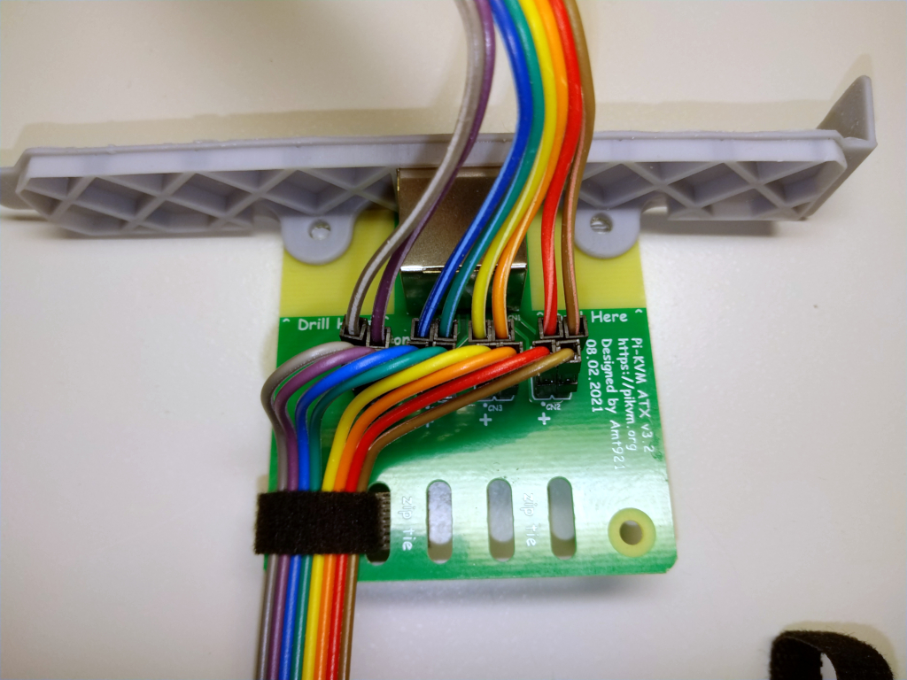
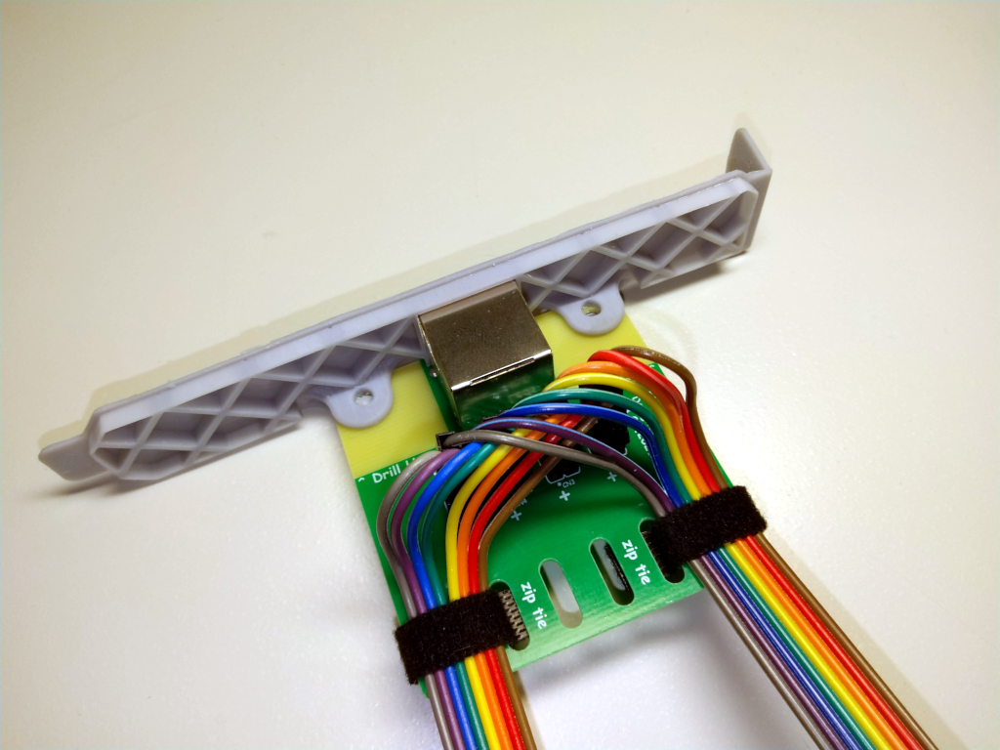
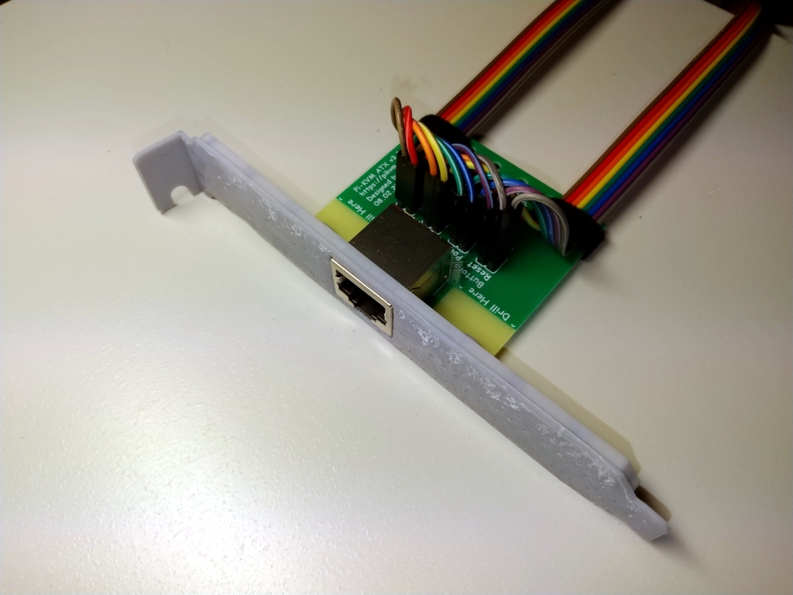
-
Find the pins on the motherboard responsible for connecting the buttons and LEDs of the front panel of the case. Usually wires and connectors on the motherboard have designations. If you're not sure, check the documentation on your motherboard.
Example
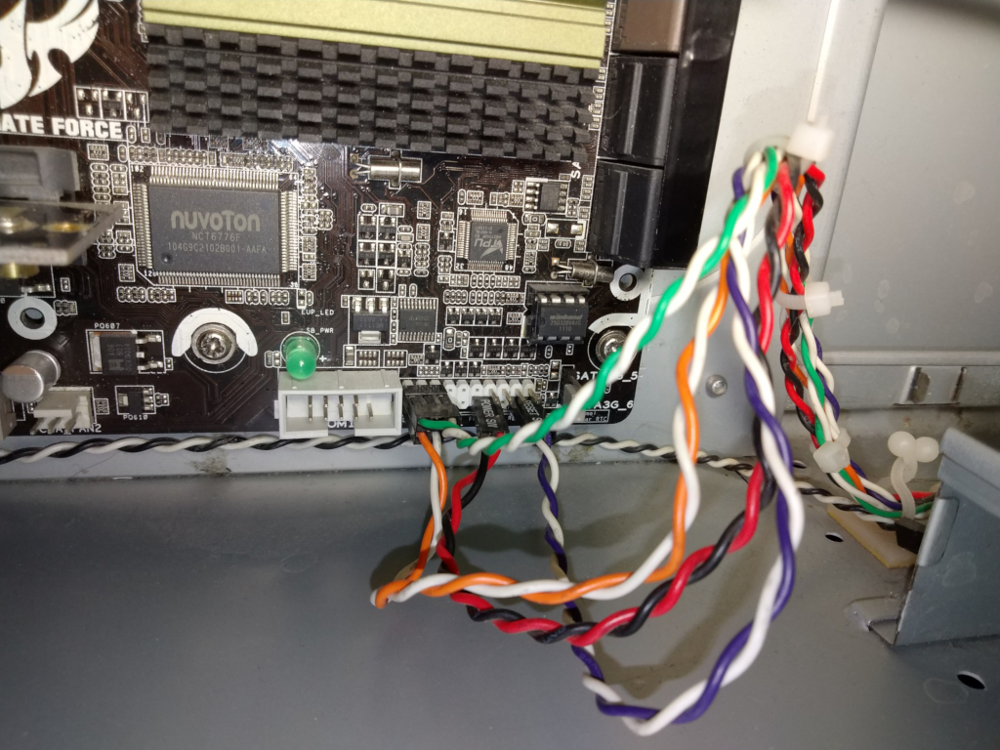

-
Place the ATX board nearby and, focusing on the signatures, connect the male pins to the female pin of the front panel wires, observing the polarity (the polarity is indicated on the ATX board).
Example
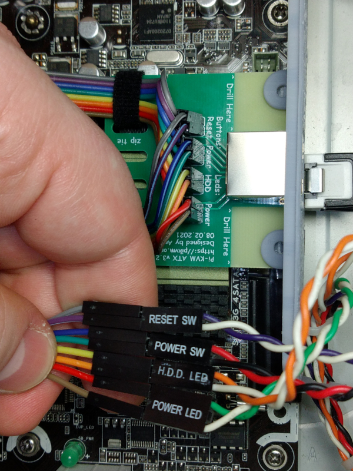
-
Repeat the procedure with the female pin of the ATX board by connecting them to the motherboard connector. Check the documentation on your motherboard.
Example
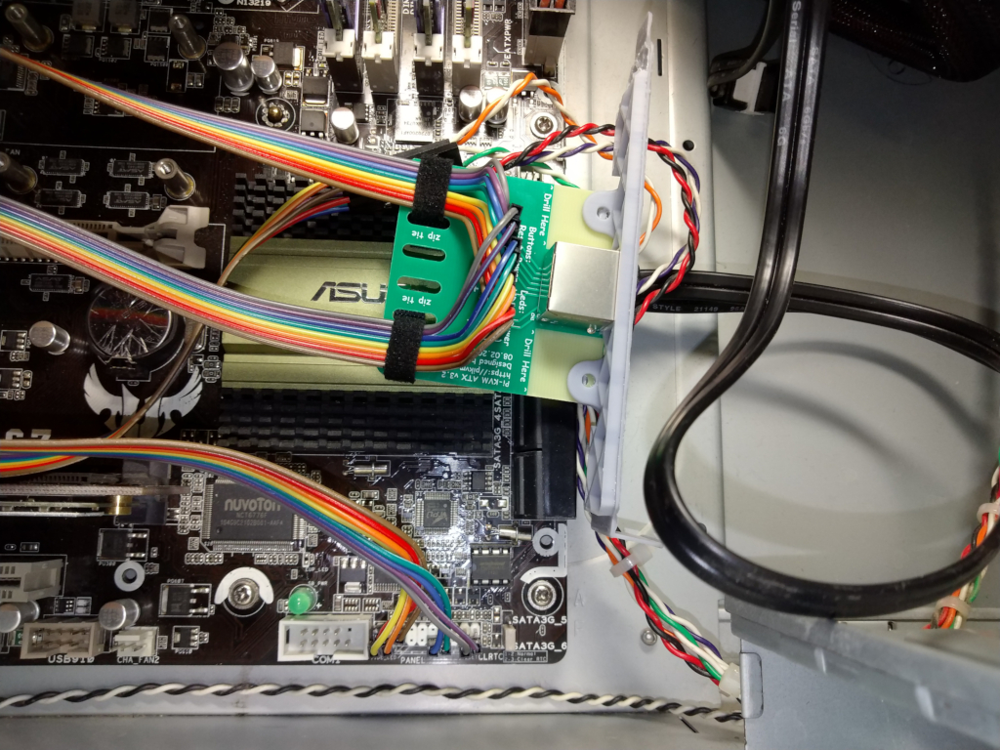
-
Install the ATX board into the PCI slot of the case and fix it with a screw, or use a different mounting method at your discretion.
Example
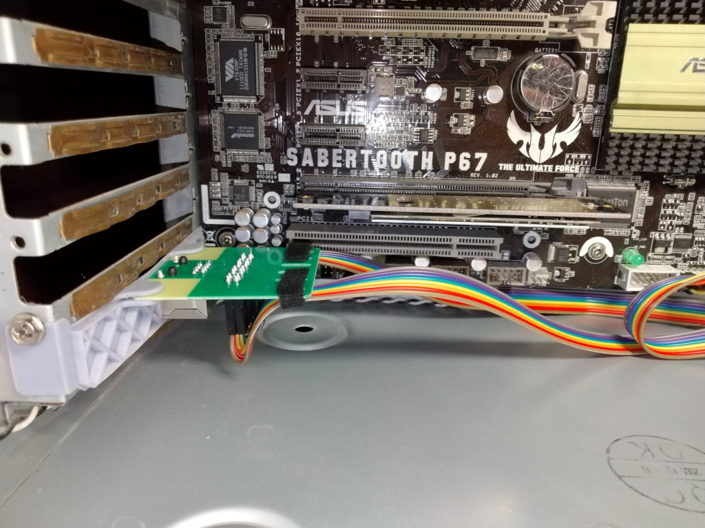
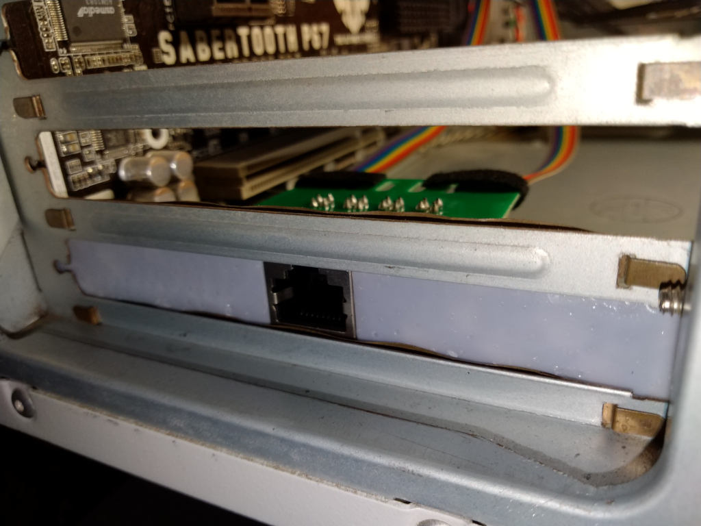
-
Arrange the wires in a way that is convenient for you and fix them if necessary.
Example
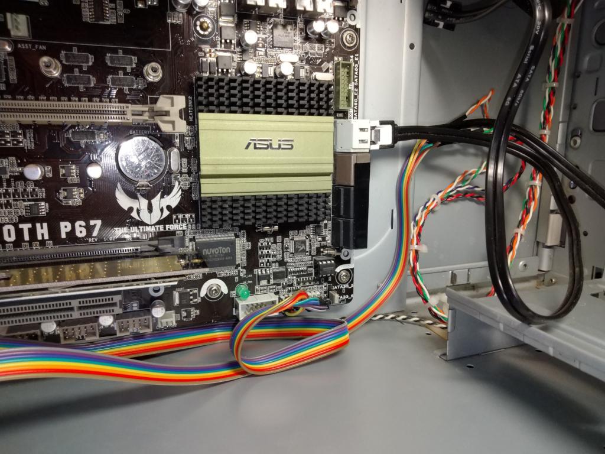
-
Connect the ATX board to PiKVM using a straight Ethernet cable. 2 pair/4 wire will NOT work, must be a 4 pair/8 wire.
Example
IO ports and jumpers¶
See the diagram
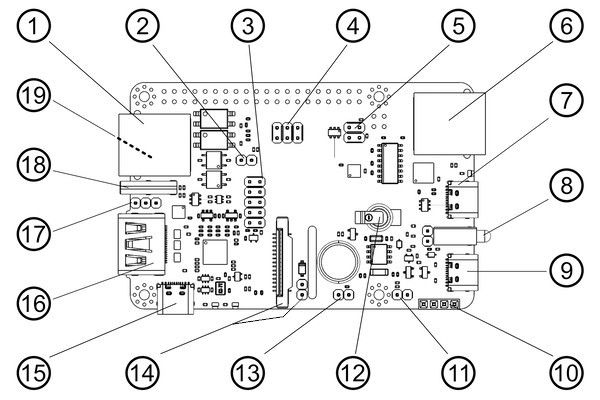
- ATX controller interface (power on/off, reboot control, PWR and HDD ACT LEDs).
- HDMI reset jumper. Connects GPIO 17 and RESET pin to HDMI capture chip. Currently not used, don't touch it.
- SPI and GPIO for the custom extension boards.
- Audio capture jumpers. Connects I2S pins 18, 19, 20 to HDMI capture chip.
- UART access jumpers. Connects GPIO 14 and 15 to the RJ-45 and USB console ports.
- Serial console port (default: /dev/ttyAMA0, RS232 input, outputs +6V/-6V, for the Raspberry Pi or server console access).
- USB-C console port (shared with #6 above, takes priority over RJ45).
- Power and activity LEDs. On the left of the LEDs the watchdog jumper is located. Don't touch it.
- USB-C power input.
- I2C display connector.
- Alternate +5V power input/output header pins.
- RTC clock supercapacitor (rechargeable).
- FAN connector - PWM controlled.
- CSI-2 interface and HDMI backpowering jumper, see Step 8 of the Basic Setup. Open: diode will stop current from HDMI input (backpower will be fixed), closed: will allow current from HDMI device.
- Built-in power splitter port.
- HDMI capture port (max 1080p @ 50Hz) with sound capture support.
- USB emulation pins for alternative access.
- USB-C emulation port - this port is doing the emulation of a USB keyboard, mouse, Virtual CD-ROM or USB Flash Drive, USB-Ethernet, USB-Serial port and a lot of other Linux-supported features.
- 1-Wire & Neo-pixel interface (under, advanced user feature).
GPIO pinout
Before proceeding, make sure that the mb you are using has normal ATX headers
- ATX control
power led = GPIO 24- Used for reading the host power state.hdd led = 22- Same for the HDD activity.power switch = 23- Used for pressing the power button of the host.reset switch = 27- Same for the reset button.
These pins can't be used for any other purposes even if ATX function is disabled.
-
I2C bus -
GPIO 2, 3- Can be used as I2C ONLY (OLED/RTC). -
1-Wire [19] -
GPIO 4- Also available under ATX RJ-45 port (point [19] on the above) as bi-directional buffered open-drain 5V for regular 1-Wire usage. -
UART -
GPIO 14, 15- Can be used as UART only for the serial console. When jumpers [5] are removed, you can connect to pins 14 and 15 directly using GPIO header. Also you can remove jumper [5] and disable UART console in the/boot/config.txtand/boot/cmdline.txtto use this pins for any purpose. But it's not recommended. -
Red activity led on the front [8] -
GPIO 13- Can be disabled in/boot/config.txtand available on the Neo-pixel port [19]. -
PWM fan controller -
GPIO 12. Can be used for custom purposes if the fan disconnected andkvmd-fanservice is stopped. -
I2S HDMI sound -
GPIO 18, 19, 20, 21. Can be used for custom purposes if thetc358743-audiooverlay in/boot/config.txtis disabled AND jumpers [4] are removed. -
USB breaker -
GPIO 5- Can't be used for any other purposes.
ATX RJ-45 pinout
The pinout of the RJ-45 connector is the same on the AT and ATX adapter.
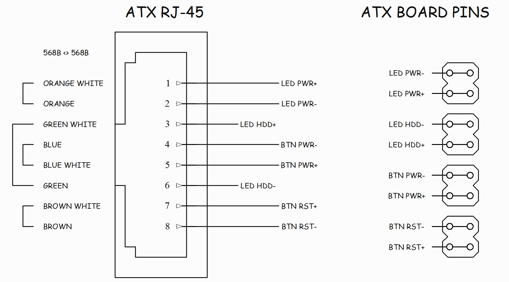
ATX LED wiring example
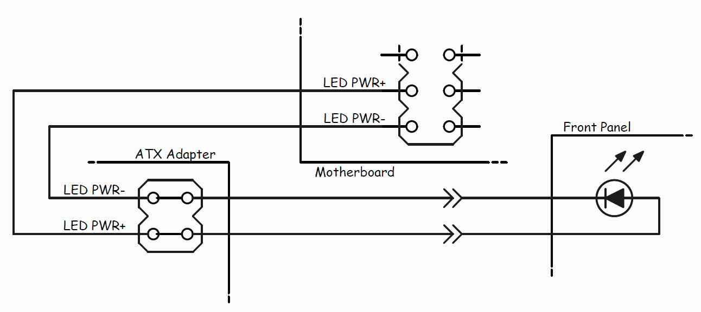
Known issues and limitations¶
- The actual frame rate of the image received via HDMI will depend on the network bandwidth, resolution and the load on the Raspberry Pi. This is usually ~20-24 FPS for 1080p over LAN.
- There may be compatibility issues with some motherboards (such as HP or DELL) which are the same as those that exist with PiKVM v2. Not everything is perfect, but if you have already used PiKVM v2 - our new v3 will work perfectly and please you. If there is no image from the BIOS, you can fine-tune the HDMI settings, but it is possible that the Mass Storage devices will not be available in the BIOS.
- Pre-release v3.2 board (NOT Kickstarter/Store edition) doesn't have HDMI backpowering workaround jumper.